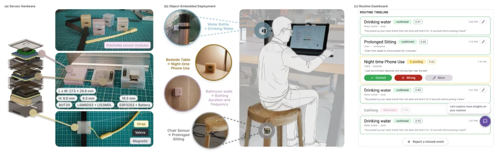
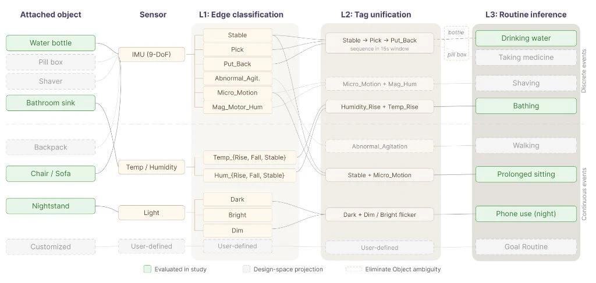

The Team


Jie Yu, Tianjian Liu, Rongqi Bei, Yuying Wan, Kaishun Wu, Xin Tong*
Our everyday routines are deeply intertwined with the objects around us. A water bottle, a chair, or a bedside table can reveal subtle traces of our daily behaviors.
PSeeds explores a new approach to everyday routine sensing, using ordinary objects as meaningful anchors for understanding human activities. By combining reconfigurable sensing with semantic interpretation, PSeeds transforms physical interactions into meaningful insights about everyday life.

System overview: (a) stackable and reconfigurable sensor hardware, (b) object-embedded deployment across everyday household objects, and (c) interactive routine timeline dashboard.
Everyday objects provide meaningful context for interpreting human behavior. The same physical interaction can represent different activities depending on the object involved.
A compact sensing toolkit can be adapted to different objects, environments, and personal routines, without requiring dedicated smart devices for every application.
Beyond detecting isolated movements, PSeeds connects sensor observations with object context to infer higher-level routines and make them understandable through AI-powered explanations.
Capture interactions and environmental changes around everyday objects.
Connect sensing evidence with object identity and contextual information to infer daily routines.
Explore routine patterns through an interactive interface, with AI-generated explanations grounded in sensing evidence.

Object-conditioned inference pipeline: mapping attached objects and multimodal sensors (IMU, temperature/humidity, light) through edge classification (L1) and tag unification (L2) to discrete and continuous routine hypotheses (L3).
PSeeds supports the exploration of diverse everyday activities, including:
Tracked via IMU pick-and-place motion sequences on a water bottle.
Inferred from sustained stability and micro-motion on a chair or sofa.
Captured by ambient light fluctuations near a bedside table at night.
Recognized through temperature and humidity rises on bathroom walls or sinks.
We evaluated PSeeds in a controlled study with 10 participants, demonstrating promising routine detection performance and the potential of AI-assisted routine interpretation.
Micro-averaged F1 for discrete-event detection
System Usability Scale
We envision a future where everyday objects become meaningful windows into our daily lives.
Rather than simply tracking isolated actions, PSeeds explores how sensing the objects around us can help uncover the routines, patterns, and behaviors that shape everyday life.
Everyday objects are more than things we interact with. They are windows into how we live.
Paper · Adjunct Proceedings of the 39th Annual ACM Symposium on User Interface Software and Technology (UIST '26 Adjunct) — publication link forthcoming